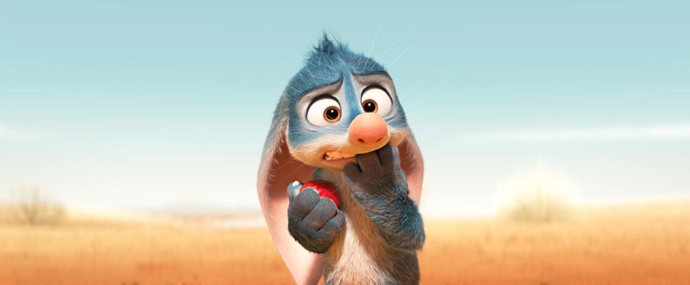
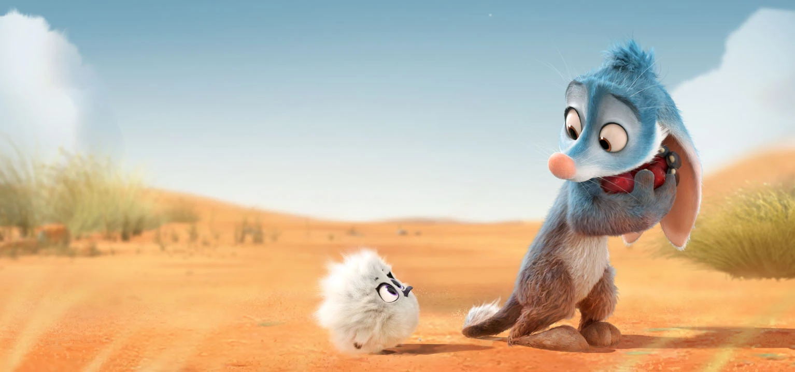
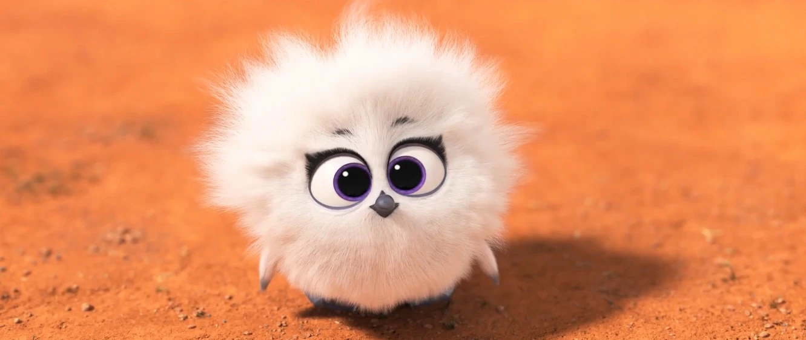

Большие уши. Ещё больше доброты.Наш ушастый искатель приключений
Билби01
Немного ворчун, немного одиночка. Любит ягоды и спокойную жизнь. Но за его осторожностью скрывается огромное доброе сердце.

Маленький герой.
Большое сердце.
Иногда, чтобы найти целый мир,
достаточно встретить одного друга.
Даже в огромном мире
самое главное — быть рядом.
Он просто искал что-нибудь вкусное.
А нашёл того, кто стал ему дороже всего.
В солнечной австралийской пустыне Билби привык полагаться только на себя. Но однажды на его пути появляется крошечный птенец — любопытный, беззащитный и совершенно один.
Случайная встреча становится началом большого приключения. Вместе герои учатся доверять, заботиться и быть смелее ради того, кто рядом.
У каждого свои привычки.
И одно большое сердце на двоих.

Большие уши. Ещё больше доброты.Немного ворчун, немного одиночка. Любит ягоды и спокойную жизнь. Но за его осторожностью скрывается огромное доброе сердце.

Маленький комочек большого счастья.Крошечный, доверчивый и бесконечно любопытный. Ещё не умеет летать, зато уже знает, как растопить даже самое осторожное сердце.
Нажмите на сердечко, чтобы выбрать любимого героя.
Дом — это не место.
Это тот, кто рядом.
06 кадров, к которым
хочется возвращаться
Каждый кадр — маленькая история. Нажмите, чтобы рассмотреть.
Устраивайтесь поудобнее.
Билби и его маленький друг уже ждут вас.